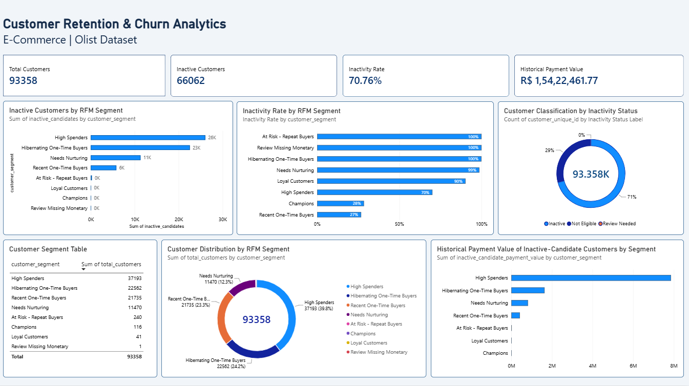

Project Overview
This project analyzes the Olist Brazilian e-commerce dataset to understand customer purchasing behavior, repeat purchases, RFM segments, and potential inactivity. Python and Pandas support data preparation, MySQL and SQL support analysis, and Power BI presents the results in an interactive dashboard.
Key Metrics
The analysis uses a 180-day inactivity rule. Inactivity candidates are not confirmed permanent churn, and historical payment value should not be interpreted as lost revenue.
Customer Segmentation
High Spenders
37,193 customers — a high historical monetary value segment.
Hibernating One-Time Buyers
22,562 customers — one-time buyers with older purchases.
Recent One-Time Buyers
21,735 customers — potential opportunities to encourage a second purchase.
Needs Nurturing
11,470 customers — a group for relevant follow-up engagement.
Smaller segments include At Risk - Repeat Buyers, Champions, Loyal Customers, and one record requiring a missing-monetary review.
Tools & Workflow
- Python and Pandas: Data inspection, cleaning, and customer-level dataset preparation.
- MySQL and SQL: Customer retention analysis, RFM reporting, and summary views.
- Power BI and DAX: KPI cards, segment comparisons, inactivity rates, and historical payment value.
- Business interpretation: Recommendations for customer engagement and repeat purchases.
Business Recommendations
- Test second-purchase campaigns for recent one-time buyers.
- Evaluate win-back messaging for eligible inactive candidates.
- Offer relevant loyalty initiatives to repeat and high-value customers.
- Track campaign results using repeat-purchase rate and customer revenue over time.
These are proposed actions based on historical analysis; campaign effectiveness has not been established by this project alone.
Project Deliverables
The repository can contain the Power BI report, SQL scripts, Python analysis, dataset documentation, and project methodology.
Add links to your actual project files and repository after uploading them.
Power BI Dashboard
Explore the dashboard created to analyze customer retention, inactivity candidates, historical payment value, and RFM segments.
